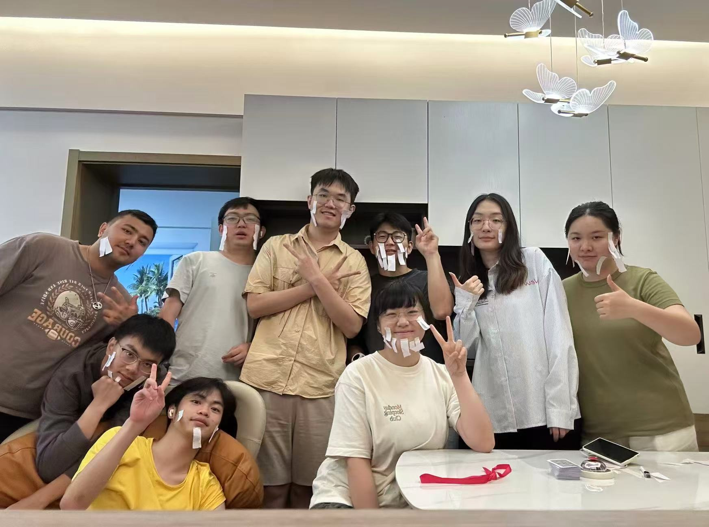
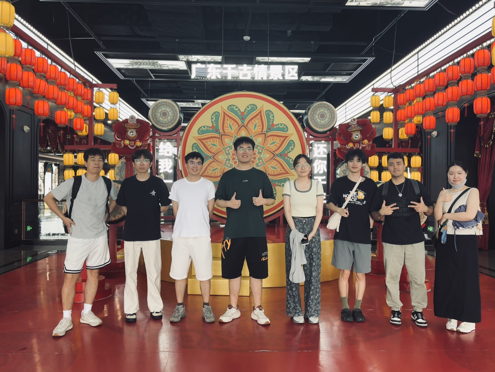
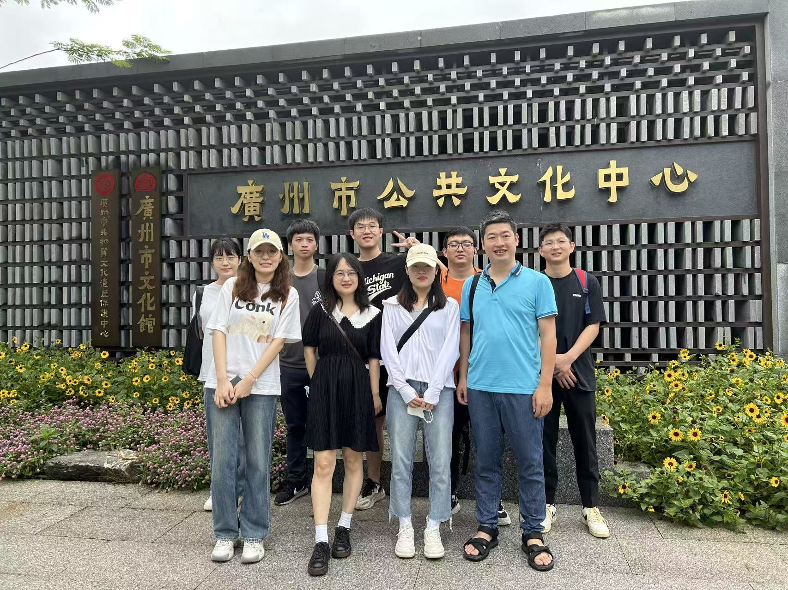
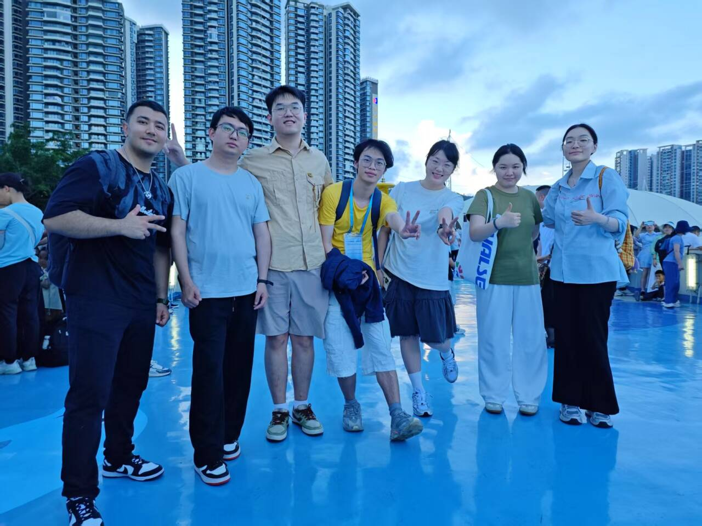
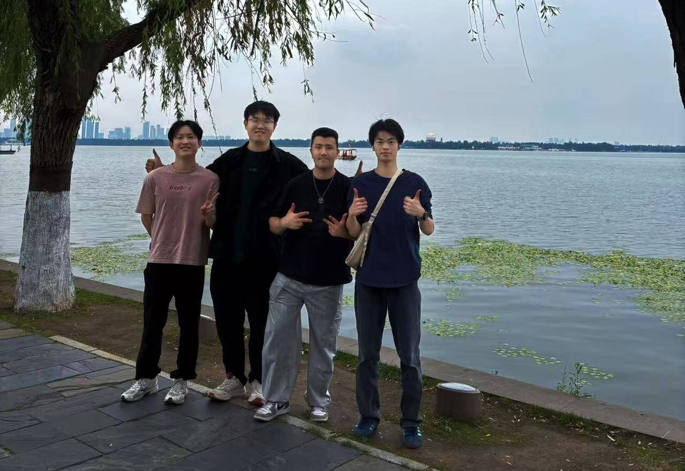
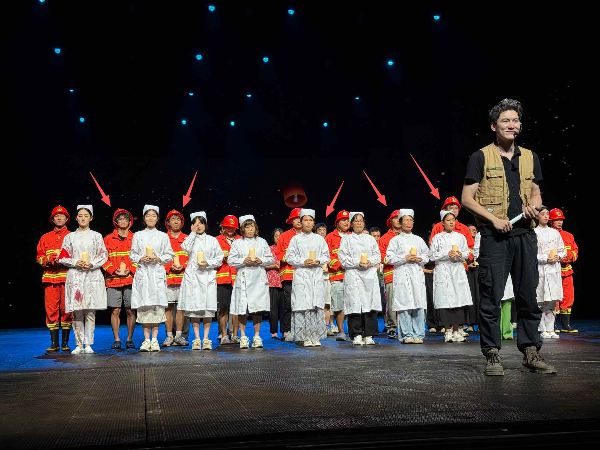

1. 技术基础
欢迎在各类竞赛中获奖且担任核心技术负责人的同学申请。
或欢迎本科阶段有高质量一作论文的同学申请。
Medical Artificial Intelligence · 医学人工智能
Graduate Recruitment
欢迎灵魂有乐趣、心中有方向、做事有热情、手上有本领的同学加入。
欢迎在各类竞赛中获奖且担任核心技术负责人的同学申请。
或欢迎本科阶段有高质量一作论文的同学申请。
组内科研与实践任务较为复杂，需要同学具备主动学习意识和数学推导能力。对于犹豫不决，随波逐流，惰性躺平，简历“虚胖”的同学，请慎重选择。
Undergraduate Team
欢迎具备以下特质之一的同学加入。对于习惯被动等待资料、依赖明确指令或反复确认后才能推进工作的同学，请慎重选择。
欢迎对未知领域和前沿算法技术保持持续兴趣，能够专注研究方向、踏实肯干、吃苦耐劳的同学。进展主要以科研论文形式呈现。
寒暑假原则上需在实验室开展工作，投入时长与研究生保持一致；正常学期应在完成课程学习的基础上，将课余时间充分投入各项指定任务。
**面向2025级，聚焦CVPR、ICCV、ECCV、ICML、ICLR、NeurIPS、MICCAI等国际学术会议；计划招募3人，剩余名额2人
**面向2025级，聚焦CVPR、ICCV、ECCV、ICML、ICLR、NeurIPS、MICCAI等国际学术会议；计划招募3人，剩余名额3人
欢迎对电子设计和电子系统集成感兴趣，能够长期聚焦一个方向并持续迭代的同学。进展主要以系统设计形式呈现。
Research Topics
Intelligent Education / Smart Health Care
Anomaly Detection
视频异常检测与可解释异常定位。Action / Skill Assessment
长时程技能视频理解、阶段化评分与过程质量建模。Gaze Estimation
注视估计、注意力建模与人机交互中的行为理解。Selected Publications
围绕医学图像异常检测中的正常模式建模与异常区域识别问题，结合时间感知潜在扩散、反向知识蒸馏与交叉一致性约束，提升异常检测的稳定性与泛化能力。
面向弱监督视频异常检测，探索多语言提示对视觉特征方向性学习的引导作用，增强模型对复杂异常事件的语义理解与判别能力。
聚焦技能操作质量评价，利用节奏感知 Transformer 建模动作过程中的时序节律差异，并通过排序学习提升技能评分的区分度。
通过内容相关与内容无关的交叉注意力机制，增强视频异常检测模型对场景内容变化和异常行为模式的联合建模能力。
将自注意力机制与自编码器结构结合，用于学习视频正常行为模式并识别异常片段，为后续视频异常检测研究奠定基础。
面向边缘智能应用场景，研究高效视频异常检测方法，强调视频无关正则性增强与轻量化部署能力。
针对乳腺超声病灶分割中的边界模糊与对比度不足问题，引入负-正交叉注意力机制，提升病灶区域定位与分割精度。
将渐进式循环结构与课程学习思想结合，用于二维医学图像分割任务，提升模型从简单到复杂样本的学习效率与鲁棒性。
面向阿尔茨海默病结构 MRI 诊断，利用多模板元信息正则化增强脑影像表征学习，提高疾病识别的可靠性与可解释性。
Funded Projects
团队承担国家级、省级与市级科研项目，持续推进医学人工智能基础方法与应用转化研究。
Guangdong Basic and Applied Basic Research Foundation
National Natural Science Foundation of China
Guangdong Basic and Applied Basic Research Foundation
Science and Technology Program of Guangzhou
National Natural Science Foundation of China
Contact
欢迎对医学人工智能、行为理解、技能质量评价和智能康养方向感兴趣的同学联系交流。
Lab Culture
能学，会玩，懂生活
欢迎有趣灵魂、隐藏段子手、资深吃货、活力显眼包、运动达人和撸铁爱好者加入iCareLab。
这里不只做科研，也不只有例行聚餐，还有脑洞乱飞和花式团建，以及一群不太安分但很靠谱的人，外加一个“老登”不定期嘚啵嘚啵输出。





